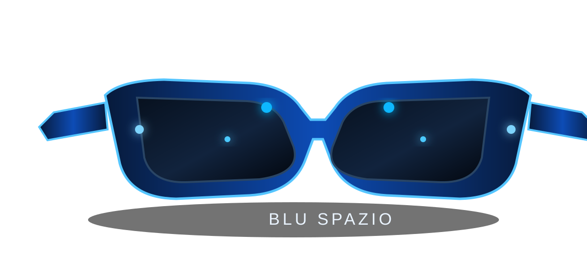
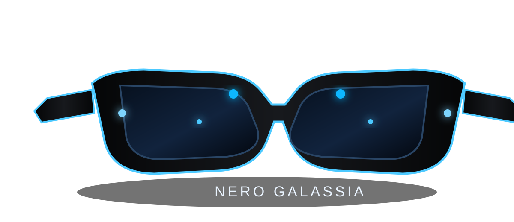
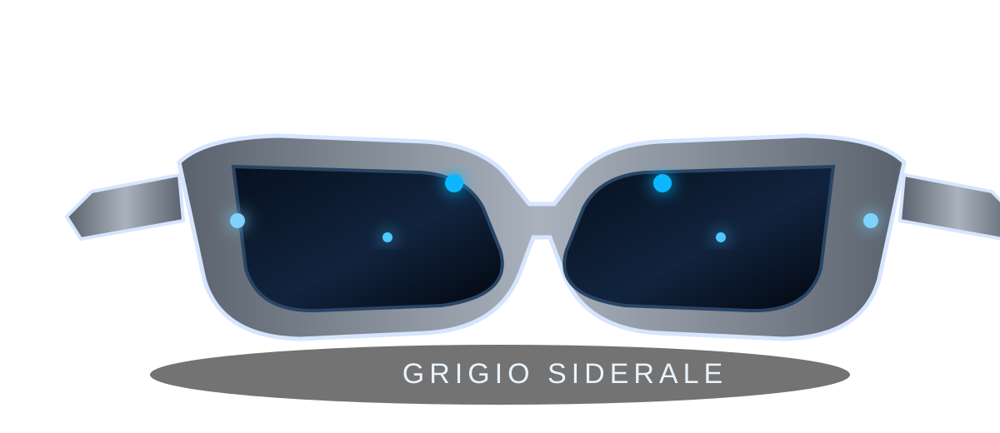

Assistive intelligence • Wearable AI
VISION
AI
Un concept di occhiali intelligenti progettato per trasformare ciò che accade nell'ambiente in indicazioni vocali semplici, discrete e utili.

Tecnologia invisibile
Quattro occhi. Una sola interfaccia.
Il concept integra quattro fotocamere — due frontali e due laterali wide-angle — con sensori di profondità LiDAR/ToF studiati per risultare il più possibile discreti e integrati nel design delle lenti e della montatura.
4fotocamere: 2 frontali + 2 laterali wide-angle
LiDAR / ToFsensori di profondità integrati in modo discreto
AI Visionriconoscimento ambiente, oggetti e testo
Voice Firstindicazioni vocali contestuali
Tre finiture
Un oggetto tecnologico che sembra un vero paio di occhiali.
01

Nero Galassia
Profondo, minimale, tecnico.
02

Grigio Siderale
Elegante, neutro, industriale.
03
Blu Spazio
Distintivo, premium, contemporaneo.
Da concept a asset
Non solo design. Un progetto trasferibile.
VISIONAI viene presentato come pacchetto di proprietà intellettuale, architettura tecnica, documentazione, disegni, indicazioni di prototipazione e piano di validazione, con l'obiettivo di rendere l'acquisizione più rapida rispetto a uno sviluppo da zero.